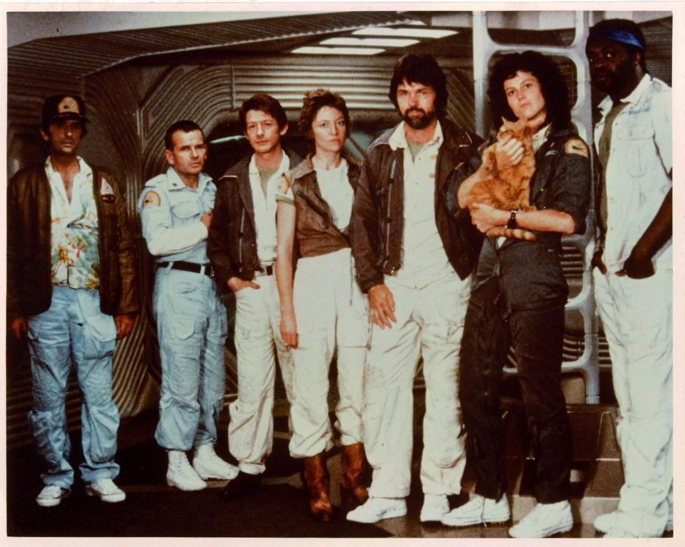

Información
Alien: el octavo pasajero, o simplemente Alien en su idioma original, es una película de ciencia ficción y terror dirigida por el cineasta británico Ridley Scott y estrenada en 1979 cuya trama relata el acecho de una criatura alienígena a la tripulación de una nave espacial.
Reparto Principal
- Sigourney Weaver como Ellen Ripley, tercera oficial (teniente) y piloto.
- Veronica Cartwright como Joan Lambert, oficial de navegación.
- Ian Holm como Ash, oficial científico y médico de la tripulación.
- John Hurt como Kane, oficial ejecutivo y copiloto.
- Yaphet Kotto como Parker, ingeniero jefe.
- Tom Skerritt como Dallas, capitán y primer oficial en jefe.
- Harry Dean Stanton como Brett, ingeniero técnico.
- Bolaji Badejo como el alien, antagonista principal de la película.

Características Técnicas
Los formatos cinematográficos utilizados en la cinta son de 2,20:1 y 2,35:1, con lentes anamórficos de la compañía Panavision. El formato del negativo de la película es de 35 milímetros, uno de los tantos negativos usados fue Eastman 100T 5247, en tanto que el formato para la cinta impresa varió de 8 a 70 milímetros. Los lugares donde revelaron la cinta incluyeron los laboratorios DeLuxe, ubicado en Estados Unidos, y Rank Film Laboratories, radicado en Denham, Reino Unido. El audio original de la cinta contó con sonido Dolby Digital 5.1, aunque en versiones posteriores como su formato Blu-ray, el doblaje a castellano consta de un sonido DTS-HD de 5.1.